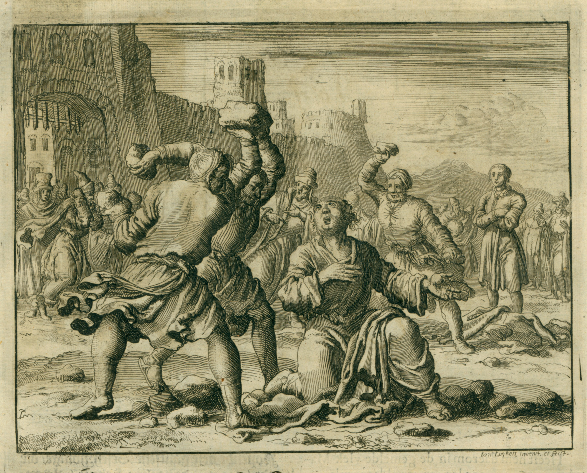

예수님의 제자들이 전한 복음

성령의 선물
예수님께서 부활 후 40일 동안 제자들에게 나타나시는 동안, 그들에게 약속된 성령을 받을 때까지 예루살렘을 떠나지 말라고 당부하셨습니다. (요한복음 14:16) 사도행전 2장에는 제자들이 그 말씀에 순종하여 함께 모여 있는 장면이 기록되어 있습니다. 그들이 모여 있을 때, 갑자기 강한 바람 소리가 그들이 있던 집 안을 가득 메웠고, 각 사람의 머리 위에는 불꽃 같은 것이 나타났습니다. 그들은 모두 성령으로 충만해졌습니다.
성령이 그들을 충만하게 하자, 그들은 각기 다른 언어로 말하기 시작했습니다. (사도행전 2:4)
마침 그때, 예수님의 제자들이 성령으로 충만하게 되었을 때, 이스라엘 주변 여러 나라에서 온 수천 명의 사람들이 유대인의 절기를 지키기 위해 예루살렘에 모여 있었습니다. (사도행전 2:8-11에서 이 나라들에 대한 목록을 확인할 수 있습니다.) 놀랍게도 이 방문자들은 모두 자기 나라의 언어로 예수님의 제자들이 전하는 예수 그리스도를 통한 구원의 복음을 들을 수 있었습니다!
베드로는 특히 감동적인 설교를 전했습니다. 그는 죄가 없으신 예수님이 십자가에 못 박히신 하나님의 아들이심을 증언하며, 구원은 오직 예수님을 통해서만 올 수 있다고 선포했습니다. 베드로의 말에 감동받은 많은 사람들 중 그날만 해도 3,000명이 넘는 이들이 예수님을 메시아이자 구주로 영접했습니다!

이날은 예수님을 믿는 신자들의 교회의 시작을 진정으로 의미했습니다. 이 새로운 신자들이 고국으로 돌아가 친구들과 가족들에게 예수님을 통한 구원에 대해 이야기하는 모습을 상상해 보세요! 처음에 “그 길”이라고 불렸던 교회를 따르는 사람들의 수는 현재 중동과 지중해 유럽으로 알려진 지역 전역에서 빠르게 증가하기 시작했습니다. 사도행전은 예수님의 제자들이 구원의 복음을 어떻게 전파했는지를 담고 있는 이야기입니다.
회심과 박해
제자들이 성령으로 충만했던 곳은 예루살렘이라는 점을 기억하세요. 예루살렘은 사람들에게 예수님에 대해 알리기 가장 꺼려지는 장소였습니다. 결국, 예수님이 십자가에 못 박히신 바로 그곳이기 때문입니다. 예수님을 죽인 유대 지도자들의 박해는 이제 새롭고 성장하는 예수님의 추종자들에게 집중되고 있었습니다.
예수님의 복음을 전한 설교자였던 스데반은 복음을 전하다가 최초로 살해된 "그 길"의 신자였습니다. (사도행전 6:8-7:60)
가장 극적인 회심
예수님에 대한 모의 재판을 주관했던 가야바와 다른 제사장들 외에도, 예수님의 모든 추종자를 없애는 것을 평생의 일로 삼았던 또 다른 열정적인 유대인이 있었습니다. 그의 이름은 다소 출신의 사울입니다.

사울은 예루살렘의 성전 제사장들에게 요청하여 예수님의 '길'을 믿는 유대인들을 체포하고 감옥에 가두는 허가를 받았습니다.
사울은 사실 회당에서 예수님을 믿는 자들을 찾으러 다마스쿠스로 가는 길에 있었습니다. 그때 하늘에서 찬란한 빛이 그를 둘러 비추었고, 그는 땅에 엎드려졌습니다. 그때 “사울아, 사울아, 왜 나를 박해하느냐?” 하고 말하는 소리가 들렸습니다. (사도행전 9:1-19)
사울은 “주님, 주님은 누구십니까?”라고 물었습니다. 그때 그에게 말씀하신 분은 예수님이셨습니다. 하나님께서는 사울을 선택하셔서 예수 그리스도의 복음을 이방인들에게, 즉 유대인이 아닌 모든 사람에게 전하게 하셨습니다. (사도행전 9장)
예수님을 따르던 유대인들은 사울이 예수님의 길을 믿게 되었다는 소식을 듣고 믿을 수 없었습니다. 그가 자신들을 가장 심하게 박해하던 사람에서 가장 유창한 설교자가 되었다는 사실이 너무나 놀라웠습니다. 많은 유대인 신자들은 사울이 정말로 회심했다는 것을 믿기까지 오랜 시간이 걸렸고, 여전히 그가 과거에 저지른 일들 때문에 두려움을 느꼈습니다.
사울이 이방인들 사이에서 설교 사역을 시작했을 때, 그는 자신의 이름의 로마식 형태인 바울을 사용하기 시작했습니다. (사울은 유대식 이름이었습니다.)
바울은 예수님의 복음을 전파하기 위해 수천 마일을 걸으며 다녔습니다. 그의 이야기는 사도행전에서 확인할 수 있습니다(사도행전 11:25-28장). 그는 예수님에 대한 설교와 가르침으로 인해 많은 박해를 받았고, 결국 로마에서 체포되어 감옥에 갇히게 되었습니다. 그곳에서 바울은 유럽에 흩어진 교회들에게 보내는 여러 편지를 썼으며, 이 편지들은 신약 성경에 수록되어 있습니다. 바울의 회심 덕분에 우리는 예수님의 제자들에게 지침과 격려, 희망과 확신을 주는 성경을 가지게 되었습니다. 바울의 편지를 통해 예수님의 제자로서 어떻게 살아야 하는지를 배울 수 있습니다.